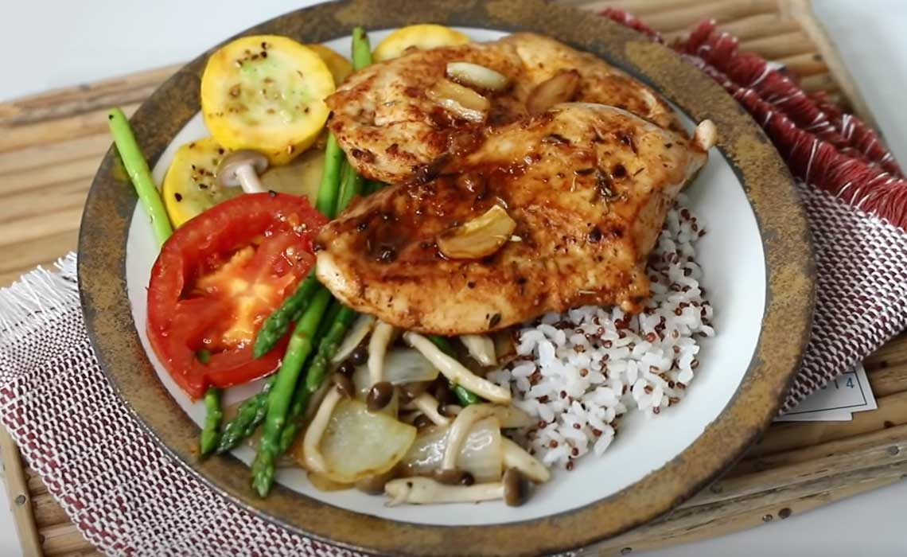
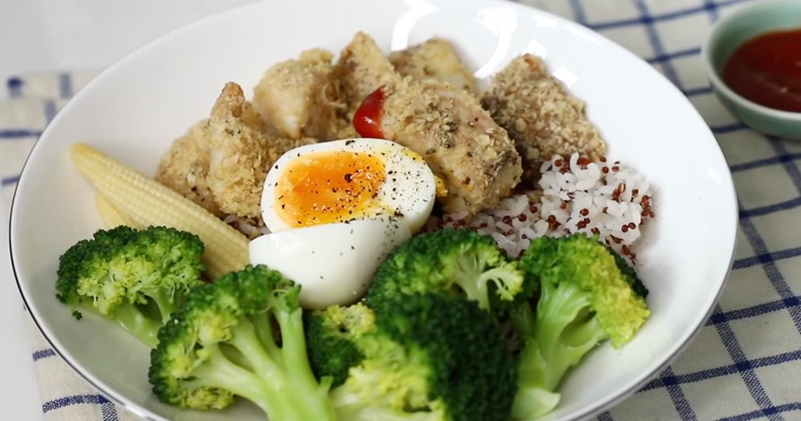
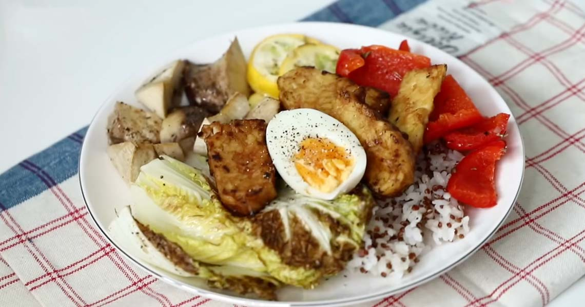

食材：
橄欖油（適量）、鹽（適量）、黑胡椒（適量）、義式香料（適量）、紅椒粉（適量）、雞胸肉一片（40g蛋白）、蘆筍一把、鴻禧菇1/2包、大番茄1/2顆、櫛瓜1/2條、洋蔥1/4顆。。
蘆筍小知識：高鉀蔬菜、有助利尿、消除水腫。
做法：
紅藜與白米以1:1～1:2比例混合，用冷水沖洗3-5次，使水不在混濁。
Tips：由於紅藜比較小顆一點，可以用咖啡的濾網來洗我們的藜麥飯。
加入淹過米量約1cm的水，外鍋一碗水，入電鍋蒸30-40分鐘完成。
雞胸肉清晰後稍微拭乾，橫切（一首按壓固定，另一手橫切。）以鹽、黑胡椒、橄欖油、紅椒粉、義式香料醃製20分鐘至1小時以上。
Tips：可以在較厚的部位再多劃幾刀。
平底鍋到少許油中火熱鍋，暴香蒜。煎雞胸肉一面2-3分鐘，至金黃色後翻面繼續煎1-2分鐘。觀火蓋上鍋蓋悶3-5分鐘。
櫛瓜切片，洋蔥1/4顆切塊，大番茄切片，鴻禧菇去蒂頭，蘆筍削皮去梗。
平底鍋倒少許油中火熱鍋，先炒洋蔥至透明後，下鴻禧菇一起拌炒。接著加入蘆筍、番茄、櫛瓜，倒少許水持續翻炒至軟。胡椒鹽、義式香料調味盛起。

食材：
橄欖油（適量）、鹽（適量）、黑胡椒（適量）、義式香料（適量）、燕麥一大匙（20-30g，富含維生素B、E、膳食纖維）、檸檬（半顆）、鯛魚（二大片）、花椰菜（數朵）、玉米筍（2-3條）、蛋（一顆）。
Tips：鯛魚三大好處：
1.價格親民
2.富含蛋白質
3.低卡路里
做法：
鯛魚洗淨後，切成易入口的大小，以鹽、黑胡椒、檸檬汁、義式香料、橄欖油按摩醃製15-20分鐘以上。
Tips：有去腥效果。
氣炸前，燕麥用果汁機/調理機打碎。
將鯛魚均勻裹上燕麥後，放上烘培紙。氣炸180-200度，約15-20分鐘完成。
煮一鍋沸水（中火），水煮玉米筍&花椰菜約2-3分鐘。加一小匙鹽巴可防止蔬菜變色。
半熟水煮蛋水煮6-8分鐘。取出蛋後沖冷水剝殼。

食材：
橄欖油（適量）、鹽（適量）、黑胡椒（適量）、義式香料（適量）、櫛瓜1/2條、彩椒1/2條、杏鮑菇1/2條、娃娃菜2株、醬油（適量）、天貝（半包）。
天貝小知識：源自印尼的國寶級食材，大豆發酵製品，素食者優質蛋白質來源！富含B12、維生素E、黃酮、鐵、鋅等維生素。
做法：
將蔬菜們淋上鹽、黑胡椒、橄欖油、義式香料。
入烤箱180-200度，烤20分鐘左右。
天貝切半後切易入口大小。
平底鍋倒少許油，中火煎天貝至兩面熟。加入醬油調味盛起。
